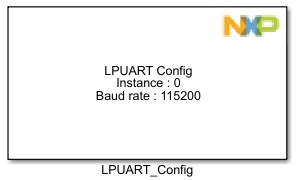
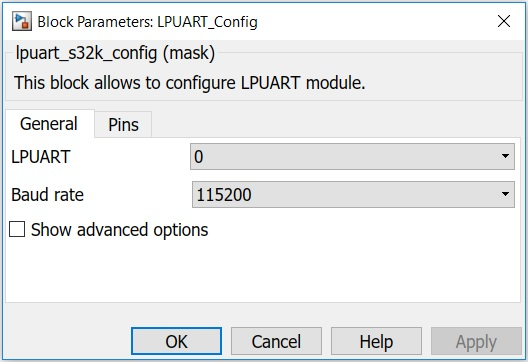
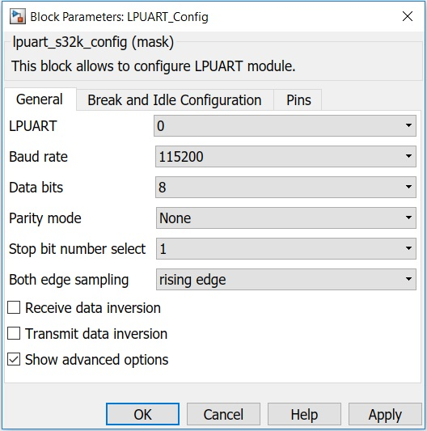
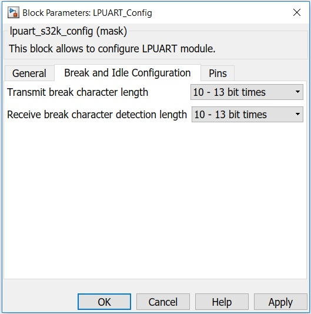
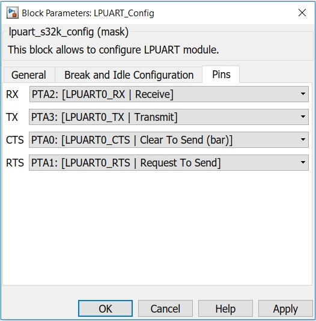

LPUART Configuration Block
Low Power Universal Asynchronous Receiver/Transmitter Configuration Block
The main functionality of the block is to configure LPUART module.
Block Image
Inputs:
- None
Outputs:
- None
Parameters and Dialog Box
The block dialog consists of the following tabs:
General
The General Settings tab contains the following parameters:
LPUART Module
Select which LPUART module to use.
Baud rate
Available speed selections for the serial baud rate in kbps.
Show advanced options
Shows or hides the Advanced options.
Advanced
Data bits
Select the number of data bits to use:
- 8 - data bits
- 9 - data bits
- 10 - data bits
Parity mode
- None
- Even
- Odd
Odd parity means the total number of 1s in the data character, including the parity bit, is odd. Even parity means the total number of 1s in the data character, including the parity bit, is even.
Stop bit number select
SBNS determines whether data characters are one or two stop bits.
Both edge sampling
Enables sampling of the received data on both edges of the baud rate clock, effectively doubling the number of times the receiver samples the input data for a given oversampling ratio.
- rising edge - Receiver samples input data using the rising edge of the baud rate clock
- rising and falling edges - Receiver samples input data using the rising and falling edge of the baud rate clock
Receive data inversion
Setting this bit reverses the polarity of the received data input.
Transmit data inversion
Setting this bit reverses the polarity of the transmitted data output.
Break and Idle Configuration
The Break and Idle Configuration tab is part of advanced options. It contains the following parameters :
Transmit break character length
Selects a longer transmitted break character length. Detection of a framing error is not affected by the state of this selection.
- 10 - 13 bit times
- 13 - 16 bit times
Receive break character detection length
Selects a longer break character detection length. While 13-16 bit times option is set, receive data is not stored in the receive data buffer.
- 10 - 13 bit times
- 13 - 16 bit times
Pins
The list of available pins depends on the selected LPUART Module.
Block Dependency
- None
Block Miscellaneous Details
- None
*Note: Read Hardware Manual documentation to get more information.